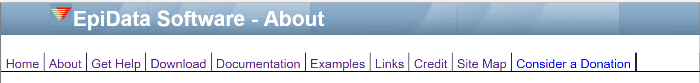
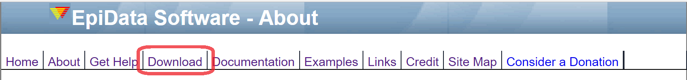
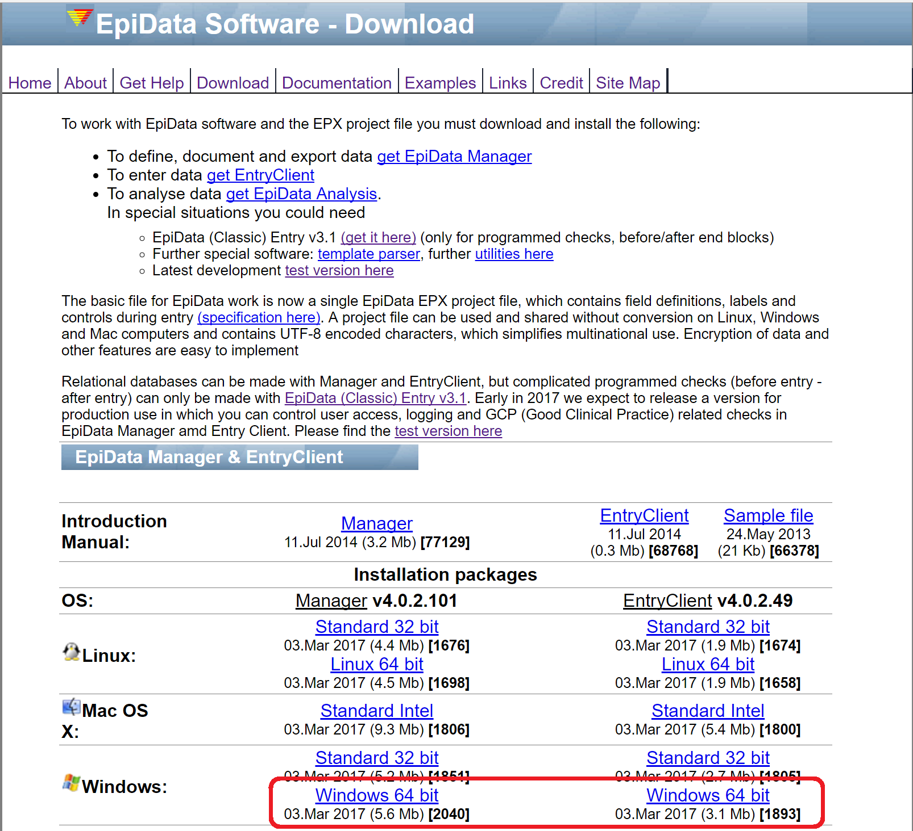
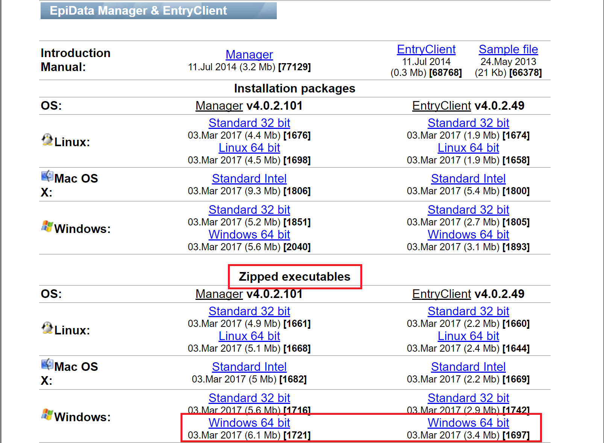

What you will learn in this chapter:
They are a software suite maintained and released by The EpiData Association, Odense Denmark. The two are sequential in usage and play a very important role in authoring the design of the data collection form for project and data manager and data entry by the data staffs. The most distinct feature of the suite is the user interface. The QES-REC-CHK concept is not well known to new comers to EpiData. Most of them are graphically oriented and prefer to use mouse. Unlike EpiData Entry, the duplex software is now supported across all platform of popular operating systems including Mac and Linux. It also supports user access control system, logging user’s activities at detailed level, strong encrypting algorithms and easy backup tool. The dedicated EntryClient of the duplex serves the exclusive purpose of data entry without having access to change the design or structure.
The EpiData website is where you visit to obtain the software. It is also a good place to find help, examples and documentations. The website is split into several parts. Links to each part are on the top navigation bar of the website. (See figure 1) The three most useful links are the Download, Docuemntation, and Examples Sections.

The EpiData website mentioned above is the one that host a collection of softwares including EpiData Manager and EntryClient. To get started downloading the EpiData Manager and EntryClient duplex, you’ll want to perform the following steps:
- Visit the main The EpiData website; you will see the download link in the navigation bar to download the duplex. (See figure 2)

- Click on that link and you are directed to the select the appropriate version to download the duplex.
- It provides with several choices to download. Therefore, Check your computer system. Here my computer system is
64-bit version Window 10. Therefore, I chooseWindows 64 bit. (See figure 3)
If you don’t have administrative right to your computer (means that the computer prevents you from installing anything without admin password), see the optional Download and Install section below.

- Once you click on the appropriate link, downloading the duplex software is straightforward.
Navigate to the download folder and double-click on the installer EpiData Manager. Proceed with all the default setting. When it is done, you will have the software installed on your computer. The same goes with the installer EntryClient as well.
Once the duplex software is installed, you can open in a few ways. It works like any other softwares. You may have a desktop shortcut or simply get to it via the Start button and the regular program list.
If you don’t have administrative password of your computer, then this is the right section for you. Otherwise, please skip to the next section.
- Under the
Zipped executablesheading (See figure 4), choose the appropriate links based on your computer system. Here, I chooseWindows 64 bit.

- Navigate to the Download folder and extract the content to the directory you desire.
- Go to your directory and open the
epidatamanager.exe.
The EpiData website is the first site you go to look for help. It provides two useful links; the Documentation and Examples sections. If you don’t find there, the next place is the Help page.
rmarkdown using R version 3.3.2 (2016-10-31) and RStudion Version 1.0.44.source code of rmarkdown here